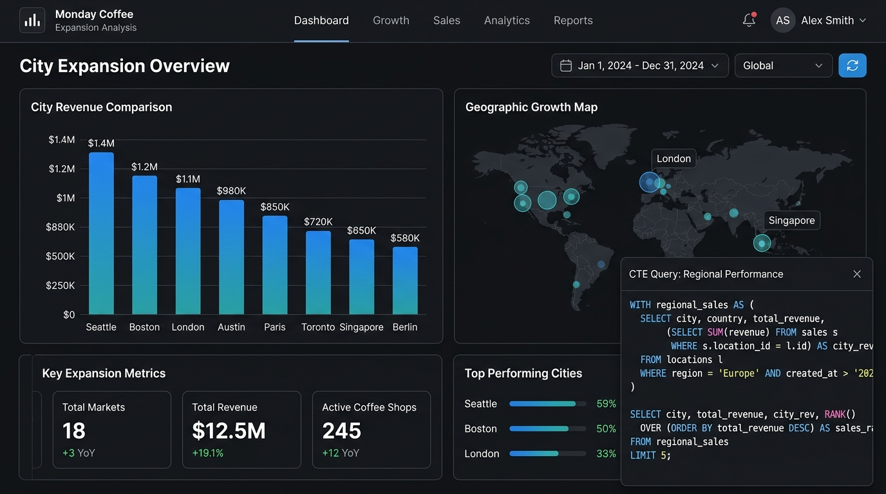

SQL CTE Expansion Pipeline

Monday Coffee Expansion Analysis
Conducted city-level demand and revenue feasibility modeling using advanced SQL common table expressions (CTEs), multi-table joins, and window aggregations to rank potential geographic markets based on customer lifetime value and cost efficiency.
Technical Highlights
- Structured multi-stage CTEs to isolate revenue per consumer and demand velocity.
- Evaluated rent-to-sales ratios across top metropolitan hubs for strategic rollout.
- Generated actionable priority scoring matrix for store launch allocation.